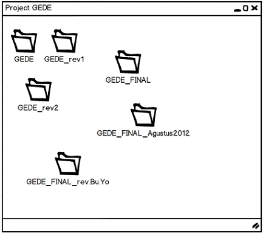
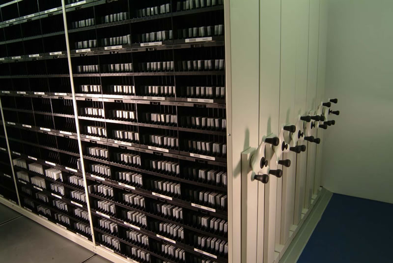
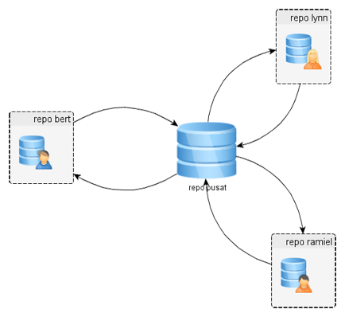
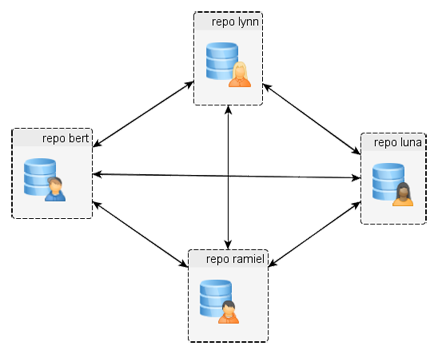
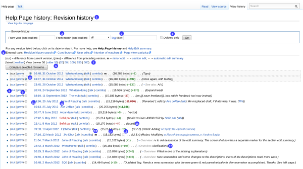

<!DOCTYPE html><html><head><meta charset="utf-8"><meta name="viewport" content="width=device-width, initial-scale=1, maximum-scale=1"><title>TKPPL | Pengenalan Kontrol Versi</title><link rel="stylesheet" type="text/css" href="bower_components/prism/themes/prism.css"><link rel="stylesheet" type="text/css" href="bower_components/todc-bootstrap-main/dist/css/bootstrap.min.css"><link rel="stylesheet" type="text/css" href="styles/main-presentation.css"></head><body></body></html><nav role="navigation" class="navbar navbar-default"><div class="container"><div class="navbar-header"><button type="button" data-toggle="collapse" data-target="presentation-chooser" class="navbar-toggle"><span class="sr-only"></span><span class="icon-bar"></span><span class="icon-bar"></span><span class="icon-bar"></span></button><a href="index.html" class="navbar-brand">BotNet</a></div><div id="presentation-chooser" class="collapse navbar-collapse"><ul class="nav navbar-nav"><li class="dropdown"><a data-toggle="dropdown" href="#" class="dropdown-toggle">Pilih Presentasi <b class="caret"></b></a><ul class="dropdown-menu"><li><a href="1-Introduction.html">Pengenalan Botnet</a></li><li><a href="2-CaraKerjaBotnet.html">Cara Kerja Botnet</a></li><li><a href="3-PresentasiDenganBespokeJS.html">Presentasi dengan Bespoke.JS</a></li><li><a href="4-SCRUM.html">SCRUM</a></li><li><a href="5-UserStories.html">User Stories</a></li><li><a href="6-Trello.html">Trello dan Bug Reporting</a></li><li><a href="7-PengenalanKontrolVersi.html">Kontrol Versi</a></li><li><a href="8-DasarKontrolVersi.html">Dasar Kontrol Versi</a></li><li><a href="9-Commit.html">Commit</a></li><li><a href="10-LogDanHistory.html">Log dan History</a></li><li><a href="6-TugasBeSpoke.html">Tugas Be Spoke</a></li><li><a href="11-TimeMachine.html">Time Machine</a></li><li><a href="12-PushDanPull.html">Push dan Pull</a></li><li><a href="13-Branching.html">Branching (Percabangan)</a></li><li><a href="14-GitFlow.html">GitFlow Workflow</a></li></ul></li></ul></div></div></nav><article id="presentation"><section><h1>Pengenalan Kontrol Versi</h1><p>Teknik Kolaborasi TI</p></section><section><h2>Apa itu Kontrol Versi?</h2><blockquote>Sistem kontrol versi adalah sebuah perangkat lunak
yang membantu tim pengembang perangkat lunak untuk 
<strong>bekerja sama</strong> dan menyimpan <strong>seluruh sejarah</strong> dari 
pekerjaan mereka.
<small>Eric Sink</small>
</blockquote><h3>Sederhananya:</h3><blockquote>Seperangkat perangkat lunak untuk membantu mencatat
dan menggabungkan berbagai versi <strong>data</strong>.
</blockquote></section><section><h2>Memang biasanya manajemen versi data seperti apa?</h2></section><section><h2>Hasilnya:</h2></section><section><h2>sebelum ada komputer gimana dong?</h2><p><a href="http://en.wikipedia.org/wiki/Archival_science">Archival Science (Ilmu Pengarsipan)</a></p></section><section><h2 class="bullet">Kontrol Versi Bisa Apa?</h2><hr><ul><li>Menyimpan sejarah perubahan data</li><li>Manajemen Revisi (pemberian nama, penanda rilis, dst)</li><li>Manajemen penggabungan cabang (?)</li></ul></section><section><h2>Evolusi Kontrol Versi</h2><h3>Tahap 1</h3><blockquote><p>Dear all,</p>
<p>
 Terlampir kode terbaru dari program yang sudah saya tambahkan fitur X.
 Perbaikan akan bug yang ditambahkan oleh Ani juga sudah saya gabungkan.
 Mohon untuk menggabungkan perubahan kode yang kalian lakukan sejak tanggal
 20 - 30 Oktober 2013 (jika ada). Terima kasih.
</p>
<p>Lampiran: <b>GoldSource.Budi.30Okt2013.tar.gz</b></p>
</blockquote></section><section><h2>Evolusi Kontrol Versi</h2><h3 class="bullet">Tahap 2: <a href="http://basepath.com/aup/talks/SCCS-Slideshow.pdf">Source Code Control System (SCSS)</a></h3><ul><li>File dikunci (1 file hanya bisa diedit 1 orang)</li><li>Belum ada fitur jaringan</li></ul></section><section><h2>Evolusi Kontrol Versi</h2><h3>Tahap 3: Kontrol Versi Terpusat</h3><p>Contohnya: svn, cvs</p></section><section><h2 class="bullet">Ciri Khas Kontrol Versi Terpusat</h2><hr><ul><li>Arsitektur Client-Server</li><li>Konsekuensi: harus ada server untuk dapat menggunakan sistem</li><li>Terdapat satu data dan sejarah data yang "benar"</li></ul></section><section><h2 class="bullet">Catatan Penting:</h2><hr><ul><li>Kontrol Versi Terpusat seperti svn dan cvs <strong>masih banyak digunakan</strong> pada perusahaan besar.</li><li>Tidak ada ruginya mempelajari kontrol versi jenis ini.</li><li>Walaupun kalau memulai proyek baru, disarankan untuk menggunakan evolusi terakhir.</li></ul></section><section><h2>Evolusi Kontrol Versi</h2><h3>Tahap 3: Kontrol Versi Terdistribusi</h3><p>Contohnya: git, hg, bzr</p></section><section><h2 class="bullet">Ciri Khas Kontrol Versi Terdistribusi</h2><hr><ul><li>Tidak ada satu data dan sejarah data yang "benar"</li><li>Setiap pengguna sistem memiliki kopi keseluruhan data dan sejarahnya</li><li>Tidak memerlukan server untuk menggunakan sistem</li></ul></section><section><h2 class="bullet">Implementasi Kontrol Versi</h2><hr><ul><li>Sebuah Software Terpisah</li><li>Integrasi dengan Software Lain</li></ul></section><section><h2>Kontrol Versi sebagai Software Terpisah</h2><h3>Contohnya: <a href="http://subversion.apache.org/">svn</a>, 
		   <a href="http://mercurial.selenic.com/">hg</a>, 
		   <a href="http://git-scm.com/">git</a>, 
		   <a href="http://bazaar.canonical.com/en/">bzr</a></h3></section><section><h2>Kontrol Versi sebagai Software Terpisah</h2><p>Biasanya CLI, tetapi ada juga yang memiliki GUI</p></section><section><h2>Kontrol Versi Terintegrasi</h2><p>Biasanya langsung menjadi fitur dari aplikasi</p><p>Gambar: <a href="http://en.wikipedia.org/w/index.php?title=Revision_control&action=history">Kontrol Versi Wikipedia</a></p></section><section><h3>Yang Dibahas:</h3><h2>Kontrol Versi sebagai Software Terpisah</h2><p>Tepatnya: Git</p></section><section><h2>Pertanyaan?</h2></section></article><script src="bower_components/bespoke.js/dist/bespoke.min.js"></script><script src="bower_components/bespoke-bullets/dist/bespoke-bullets.min.js"></script><script src="bower_components/bespoke-scale/dist/bespoke-scale.min.js"></script><script src="bower_components/bespoke-hash/dist/bespoke-hash.min.js"></script><script src="bower_components/bespoke-progress/dist/bespoke-progress.min.js"></script><script src="bower_components/bespoke-state/dist/bespoke-state.min.js"></script><script src="bower_components/prism/prism.js"></script><script src="bower_components/prism/components/prism-bash.min.js"></script><script src="scripts/main.js"></script><script src="bower_components/jquery/jquery.min.js"></script><script src="bower_components/todc-bootstrap-main/dist/js/bootstrap.min.js"></script>